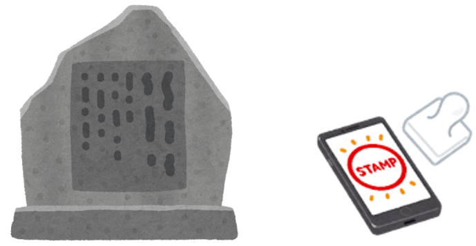

地図上のグリーンリーフ（緑の葉）は災害伝承碑などの場所を表しています。
いずれかをタップ（クリック）すると、災害伝承碑などの写真と名称が表示されます。
また、現在地からの距離も表示されます。近くまで行けば、チェックインが可能となり、デジタルスタンプがゲットできます。ゲットしているデジタルスタンプは、スタンプ帳で確認できます。
※注意：
1)スマートフォンの位置情報へのアクセスを可能にしておいてください。
2)使用するスマートフォンが変わると、過去に獲得しているデジタルスタンプは反映されません。

スタンプを〇個以上獲得した方には、先着〇〇名様に記念品を差し上げます。
和歌山県土砂災害啓発センターを訪問して、スマートフォンのスタンプ帳を提示してください。
すでにゲットしてるすべてのスタンプを破棄してリセットします。